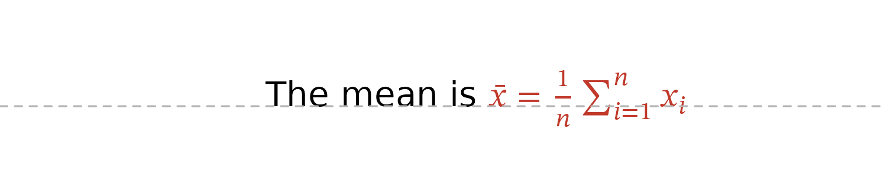
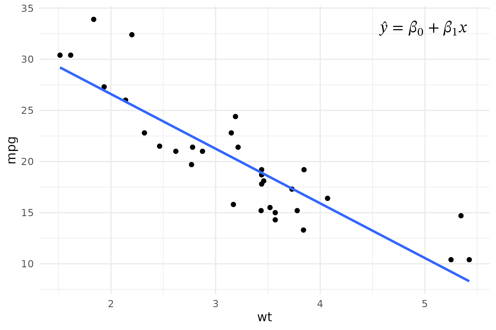
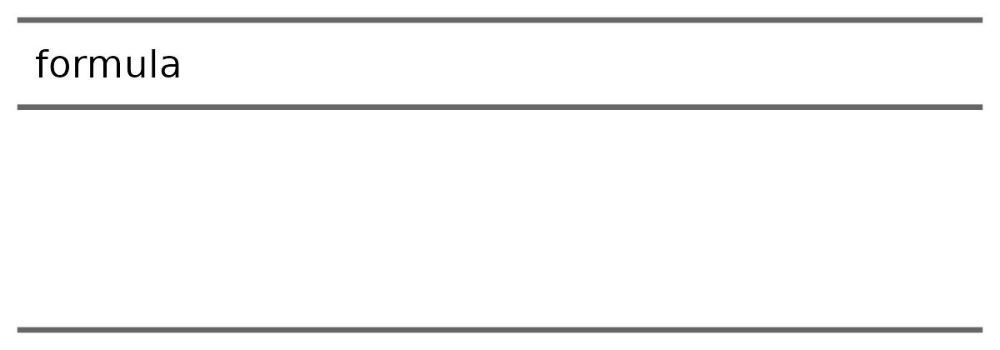

‘equatags’ lays out equations itself, with the rules of TeX and the parameters of the ‘MATH’ table of an OpenType math font. It does not need a graphic device, a browser or Word:
-
equation_size()gives the width, the height above the baseline and the depth below it; -
equation_grob()draws the equation with ‘grid’ (R >= 4.3), with the glyphs of the font.
The default font is ‘STIX Two Math’, shipped with ‘gdtools’: the results only depend on this file, they are the same on every machine.
Size of equations
eqs <- c(
"\\frac{a+b}{c}",
"\\sum_{i=1}^{n} x_i^2",
"\\sqrt{x^2 + y^2}",
"\\begin{pmatrix} a & b \\\\ c & d \\end{pmatrix}"
)
equation_size(eqs, size = 12)
#> width height depth
#> 1 0.2701833 0.1845333 0.09913333
#> 2 0.5405611 0.1623167 0.06255000
#> 3 0.6443407 0.1664750 0.04435833
#> 4 0.5171667 0.2430000 0.15700000Sizes are in inches, at the font size size in points.
Multiplied by 72, they are in points:
round(equation_size(eqs, size = 12) * 72, 1)
#> width height depth
#> 1 19.5 13.3 7.1
#> 2 38.9 11.7 4.5
#> 3 46.4 12.0 3.2
#> 4 37.2 17.5 11.3The display style (display = TRUE, as
$$...$$) is larger: fractions, and the limits of sums above
and below the operator.
rbind(
inline = equation_size("\\sum_{i=1}^{n} \\frac{x_i}{n}"),
display = equation_size("\\sum_{i=1}^{n} \\frac{x_i}{n}", display = TRUE)
)
#> width height depth
#> inline 0.5300444 0.1623167 0.09866667
#> display 0.3931278 0.2637333 0.18013333An equation that ‘KaTeX’ can not read gives NA with a
warning.
Another math font can be used with font: the path of a
font file, or a family name found by ‘systemfonts’, such as
"Latin Modern Math", "Libertinus Math" or
"Cambria Math".
Drawing
equation_grob() returns a grob placed at
x0, y0 (in "npc" units by
default) and justified with hjust and vjust;
colour sets its colour.
grid.newpage()
grid.draw(
equation_grob(
"f(x) = \\frac{1}{\\sigma\\sqrt{2\\pi}} e^{-\\frac{(x-\\mu)^2}{2\\sigma^2}}",
size = 16, display = TRUE
)
)Its size is known without drawing it: grobWidth(),
grobHeight(), grobAscent() and
grobDescent() give the size of the equation and the parts
above and below the baseline. To place the baseline of an equation at
y0, for example on the baseline of a text, justify it
vertically by the share of its depth in its height:
tex <- "\\bar{x} = \\frac{1}{n}\\sum_{i=1}^{n} x_i"
s <- equation_size(tex, size = 14)
eq <- equation_grob(
tex, size = 14, x0 = 0.55, y0 = 0.4,
hjust = 0, vjust = s$depth / (s$height + s$depth),
colour = "#C0392B"
)
grid.newpage()
grid.text("The mean is ", x = 0.55, y = 0.4, just = c(1, 0), gp = gpar(fontsize = 14))
grid.draw(eq)
grid.lines(y = c(0.4, 0.4), gp = gpar(col = "grey70", lty = 2))
In a ggplot2 graphic
An equation grob can be added to a ‘ggplot2’ graphic with
annotation_custom():
library(ggplot2)
eq <- equation_grob(
"\\hat{y} = \\beta_0 + \\beta_1 x",
size = 14, x0 = 0.95, y0 = 0.95, hjust = 1, vjust = 1
)
ggplot(mtcars, aes(wt, mpg)) +
geom_point() +
geom_smooth(method = "lm", formula = y ~ x, se = FALSE) +
annotation_custom(eq) +
theme_minimal()
The package ‘munch’ draws equations written as $...$ in
markdown texts: titles, labels and annotations of ‘ggplot2’
graphics.
With flextable
‘flextable’ uses equation_size() for the width of the
columns that contain equations (autofit(),
dim_pretty()) and equation_grob() to draw them
in images (gen_grob(), save_as_image()):
library(flextable)
ft <- flextable(data.frame(
formula = c("e^{i\\pi} + 1 = 0", "\\int_0^1 x^2 \\, dx = \\frac{1}{3}")
))
ft <- mk_par(ft, j = "formula", value = as_paragraph(as_equation(formula)))
ft <- autofit(ft)
plot(ft)
Differences with Word
The layout follows the rules of TeX, as LaTeX and ‘KaTeX’ do.
Compared with Word displaying the same equation with the same font,
widths differ by about 1% on usual equations. The known differences
(spaces around binary operators, matrices in parentheses…) are listed in
the section “Differences with Word and browsers” of
?equation_size. Most of them make the computed size a
little larger than in Word, which is safe to size a cell or a
column.